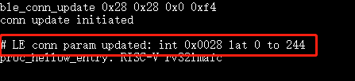
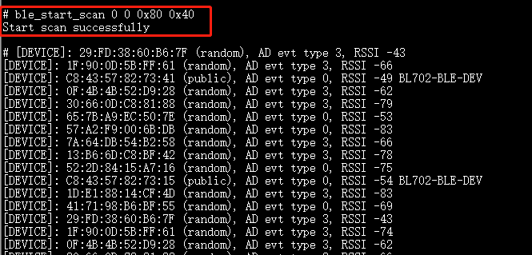
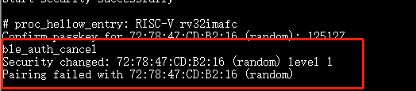
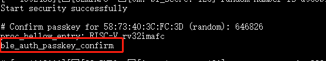
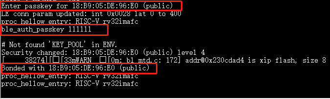
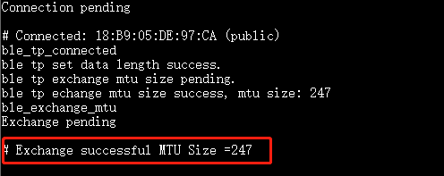
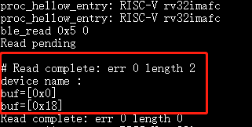
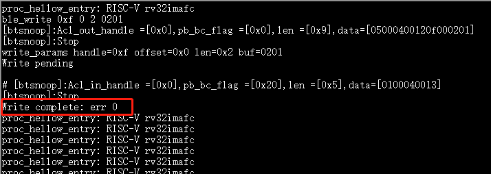
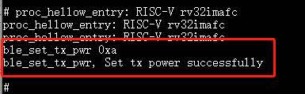

13. BLE¶
13.1. Overview¶
This example mainly introduces how to use ble.
13.2. Use steps¶
Compile
customer_app/bl602_demo_eventorcustomer_app/bl702_demo_eventproject and download the project;Use
stack_blecommand initializes ble, as part of the printing log.Use
ble_initandble_authperform related initialization in turn;

Use the command to open ble.
ble_start_adv 0 0 0x80 0x80
Users can find our device and connect via Bluetooth near the mobile app scan.
Ble connectUse update the connection parameters.
ble_conn_update 0x6 0x6 0x0 0x1f4In the SMP pairing process, due to different security levels, the commands invoked are also different. The following describes the situation where the level is 2 or 3
After a successful connection using conduct SMP process.
ble_security 2
Print out the serial input command reply pairing, as part of the printing log.
Confirm passkey for xx:xx:xx:xx:xx:xx (public)ble_auth_pairing_confirmPrint out on the serial port , indicating that the SMP pairing is successful.
Bonded with xx:xx:xx:xx:xx:xx (public)
After a successful connection using conduct SMP process.
ble_security 3
Print out the serial input command reply pairing, as part of the printing log.
Confirm passkey for xx:xx:xx:xx:xx:xx (public)：xxxxxxble_auth_passkey_confirm
Print out on the serial port , indicating that the SMP pairing is successful.
Bonded with xx:xx:xx:xx:xx:xx (public)
13.3. Introduction to Cli Commands¶
13.3.1. ble_init¶
Command function: ble general initialization, before all ble cli operations, you need to enter this command
Parameters: none
Example: Enter a command
ble_init
13.3.2. ble_auth¶
Command function: register SMP interface function
Parameters: none
Example: Enter a command
ble_auth
13.3.3. ble_unpair¶
Command function: clear pairing key
The first parameter indicates the device address type
0: The device represents the public address type
1: Indicates that the device address is of random type
2: Indicates that the device address is a resolvable address or a public address
3: Indicates that the device address is a resolvable address or a random address
The second parameter represents the device address, the high byte is first and the low byte is last. If it is 0, it means that the keys of all devices are cleared.
Example: Enter a command
ble_unpair 0 0
13.3.4. ble_start_adv¶
Command function: open broadcast
The first parameter indicates the broadcast type
0: adv_ind can be connected and can be scanned;
1: adv_scan_ind cannot be connected and can be scanned;
2: adv_nonconn_ind cannot be connected and cannot be scanned;
3: The device connection that can be specified by adv_direct_ind cannot be scanned
The second parameter indicates the broadcast mode
0：General discoverable;
1：non discoverable;
2：limit discoverable;
The third parameter represents the minimum broadcast gap, which is calculated as 0.625ms * N, and the range should be between 20 ms and 10.24 s
The fourth parameter represents the maximum broadcast gap, which is calculated as 0.625ms * N, and the range should be between 20 ms and 10.24 s
Example: Enter a command
ble_start_adv 0 0 0x80 0x80
13.3.5. ble_stop_adv¶
Command function: stop ADV broadcast
Parameters: none
Example: Enter a command
ble_stop_adv
13.3.6. ble_start_scan¶
Command function: means scanning broadcast equipment
The first parameter indicates the scan type
0: means scan passive type only monitors broadcast data
1: Indicates scan active, not only monitoring but also sending scan_req package when the conditions are met
The second parameter represents the filtering device broadcast packet
0: Do not enable duplicate filtering
1: Indicates that duplicate filtering is enabled
2: Only receive the broadcast and scan response packets initiated by the whitelist, except for the adv_direct_ind broadcast packet whose specified connection address is not its own
4: Use extended filtering strategy to filter equipment
The third parameter represents the scan gap, the calculation method is 0.625ms * N, the range is between 2.5 ms to 10.24 s, and it should be greater than or equal to the scan window
The fourth parameter represents the scan window, its calculation method is 0.625ms * N, the range is between 2.5 ms to 10.24 s, and it should be less than or equal to the scan gap
Example: Enter a command
ble_start_scan 0 0 0x80 0x40
13.3.7. ble_stop_scan¶
Command function: stop scanning
Parameters: none
Example: After the system enters SCAN, enter a command
ble_stop_scan
13.3.8. ble_conn_update¶
Command function: to update the connection parameters
The first parameter represents the minimum value of the connection gap, which is calculated as N * 1.25 ms, and its range is 7.5 ms to 4 s
The second parameter represents the maximum value of the connection gap, which is calculated as N * 1.25 ms, and its range is 7.5 ms to 4 s
The third parameter indicates how many connection events are delayed from the device. The range is from 0 to 499. For example, if the value is set to 1, it indicates that data interaction is delayed for one event, and the effect is to reduce the interaction frequency and save power
The fourth parameter represents the connection timeout time, the calculation method is N * 10 ms, and the range is 100 ms to 32 s
Example: After the connection is successful, enter the command
ble_conn_update 0x28 0x28 0x0 0xf4
13.3.9. ble_security¶
Command function: set the encryption level of SMP
The first parameter indicates the encryption level, there are 5 levels in total
0: Only used for BR/EDR, such as SDP service;
1: Indicates that no encryption is required and no authentication is required;
2: Indicates a process that requires encryption without authentication
3: Indicates that encryption and authentication are required, for example, both parties need to enter a PIN code
4: Indicates that encryption and authentication are required, and the 128bit key is passed
Example: After the connection is successful, enter the command
ble_security 2
13.3.10. ble_get_device_name¶
Command function: get local device name
Parameters: none
Example: Enter a command
ble_get_device_name
13.3.11. ble_set_device_name¶
Command function: set the local device name
Parameters: the name of the device to be set
Parameters: none
Example: Enter a command
ble_set_device_name bl602
13.3.12. ble_read_local_address¶
Command function: read the local device address
Parameters: none
Example: Enter a command
ble_read_local_address
13.3.13. ble_set_adv_channel¶
Command function: set ADV channel
Parameter: The number of ADV channels to be set, the value range is 1-7, the parameter size is 1 byte, bit0 represents channel 37, bit1 represents channel 38, bit2 represents channel 39
Example: Enter a command
ble_set_adv_channel 4
13.3.14. ble_connect¶
Command function: connect to the device at the specified address
The first parameter indicates the device address type
0: The device represents the public address type
1: Indicates that the device address is of random type
2: Indicates that the device address is a resolvable address or a public address
3: Indicates that the device address is a resolvable address or a random address
The second parameter represents the device address, with high byte first and low byte last
Example: Enter a command
ble_connect 0 18B905DE96E0
13.3.15. ble_disconnect¶
Command function: disconnect the device of the specified address
The first parameter indicates the device address type
0: The device represents the public address type
1: Indicates that the device address is of random type
2: Indicates that the device address is a resolvable address or a public address
3: Indicates that the device address is a resolvable address or a random address
The second parameter represents the device address, with high byte first and low byte last
Example: After the connection is successful, enter the command
ble_disconnect 0 18B905DE96E0
13.3.16. ble_select_conn¶
Command function: in multiple connections, set a connection object as the current connection object
The first parameter indicates the device address type
0: The device represents the public address type
1: Indicates that the device address is of random type
2: Indicates that the device address is a resolvable address or a public address
3: Indicates that the device address is a resolvable address or a random address
The second parameter represents the device address, with high byte first and low byte last
Example: After multiple devices are successfully connected, enter a command to set the selected connection object as the current connection object, and subsequent operations such as ble_read will act on the connection
ble_select_conn 1 5F10546C8D83
13.3.17. ble_auth_cancel¶
Command function: cancel the encryption authentication process
Parameters: none
Example: When in the SMP process, enter the command
ble_auth_cancel
13.3.18. ble_auth_passkey_confirm¶
Command function: Respond to the remote end after receiving the passkey, and the peer device also displays the passkey during the pairing process; For example: local print Confirm passkey for 48:95:E6:73:1C:1A (random): 745491 during the pairing process; You can send this function to reply
Parameters: none
Example: When in the SMP process, the corresponding security level is 3, you need to enter a command
ble_auth_passkey_confirm
13.3.19. ble_auth_pairing_confirm¶
Command function: After receiving a remote pairing request, use this function to reply to the remote pairing request, for example: local print Confirm pairing for 00:1B:DC:F2:20:E9 (public) during the pairing process; this function can be sent to reply
Parameters: none
Example: When in the SMP process, the corresponding security level is 2, enter the command
ble_auth_pairing_confirm,
13.3.20. ble_auth_passkey¶
Command function: request input passkey
Parameters: passkey value, the range is 0-999999
Example: When pairing with the ble_security 3 command, and the SMP pairing method is PASSKEY_INPUT (implementation method in the code: when registering the smp interface function with ble_auth, fill the function passkey_entry in the data structure bt_conn_auth_cb, passkey_display and passkey_confirm are not filled, and other interface functions are default can), the serial port will print enter passkey for XX: XX: XX : XX: XX: XX (public), when the input command is paired
ble_auth_passkey 111111
13.3.21. ble_exchange_mtu¶
Command function: swap mtu size
Parameters: None
Example: After the connection is successful, enter the command
ble_exchange_mtu
13.3.22. ble_discover¶
Command function: query the specified service or feature
The first parameter indicates the type of query
0：primary
1：secondary
2：include
3：Characteristic
4：Descriptor
The second parameter represents the uuid of 2BYTES
The third parameter represents the starting handle, accounting for 2BYTES
The fourth parameter represents the end handle, accounting for 2BYTES
Example: After the connection is successful, enter the command
ble_discover 0 0x1800 0x1 0xffff
13.3.23. ble_read¶
Command function: read the data of the specified handle
The first parameter represents the handle
The second parameter represents the offset
Example: After the connection is successful, enter the command
ble_read 0x5 0
13.3.24. ble_write¶
Command function: specify the handle to write the corresponding data
The first parameter represents the handle, which occupies 2 bytes
The second parameter represents the offset, accounting for 2bytes
The third parameter indicates the length of the data, accounting for 2bytes, the maximum does not exceed 512
The fourth parameter indicates the data to be written
Example: After the connection is successful, write 2 bytes of data, the command is , where 01 is a byte, 02 is a byte
ble_write 0xf 0 2 0102
13.3.25. ble_write_without_rsp¶
Command function: specify the handle to write the corresponding data without reply
The first parameter indicates whether to start the sign write command
0: Disable the sign write command
1: Enable the sign write command
The second parameter represents the handle, occupying 2 bytes,
The third parameter indicates the length of the data, which occupies 2 bytes, and the maximum does not exceed 512
The fourth parameter represents the data written
Example: After the connection is successful, write 2 bytes of data, the command is , where 01 is a byte, 02 is a byte
ble_write_without_rsp 0 0xf 2 0102
13.3.26. ble_subscribe¶
Command function: subscribe to CCC
The first parameter represents the CCC handle
The second parameter represents the handle of the subscription value
The third parameter indicates the subscription type
1: indicates notification
2: indicates indication
Example: After the connection is successful, enter the command to enable the notification of CCC
ble_subscribe 0xf 0xd 0x1
13.3.27. ble_unsubscribe¶
Command function: unsubscribe from CCC
Parameters: none
Example: Enter a command
ble_unsubscribe
13.3.28. ble_set_data_len¶
Command function: set pdu data length
The first parameter represents the maximum value of payload transmission, and the range is 0x001B-0x00FB
The second parameter represents the maximum time for payload transmission, and the range is 0x0148-0x4290
Example: When the connection is successful, send a command
ble_set_data_len 0xfb 0x0848
13.3.29. ble_conn_info¶
Command function: get all connection information
Parameters: none
Example: When the connection is successful, send a command
ble_conn_infoto get the connected device
13.3.30. ble_disable¶
Command function: log off BLE
Parameters: none
Example: Send a command when there is no scan/adv/connect event
ble_disable
13.3.31. ble_set_tx_pwr¶
Command function: set transmit power
The first parameter indicates the set power value
Example: Send command
ble_set_tx_pwr 0xa